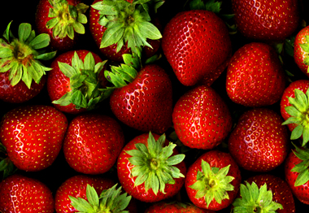

স্ট্রবেরীর পরিচিতি
স্ট্রবেরী এখন আর বাংলাদেশে অপরিচিত কোনও ফল নয়। স্ট্রবেরী ফ্লেভারড আইসক্রিম তো
ছোটবেলা থেকে আমরা সবাই কমবেশি খেয়েছি, কিন্তু এখন তাজা ফল হিসাবেও বাজারে মেলে এই
স্ট্রবেরী। হ্যাঁ, এখন বাংলাদেশেই চাষ হয় এই ভিনদেশী ফলের। সব পর্যায়ের মানুষের মাঝে
এখনও পৌঁছাতে না পারলেও ভোজন রসিক মানুষদের কাছে ঠিকই পৌঁছে গেছে দেশে চাষ হওয়া
স্ট্রবেরী। যে কোনও সুপার মার্কেট ঘুরলেই এখন সহজে দেখা মেলে এই ফলের।

কিছুদিন আগেও বাংলাদেশে উৎপাদন করা স্ট্রবেরী ফল গুলো তেমন মিষ্টি হতো না। আবার
আকারের দিক থেকেও হতো বেশ ছোট। এখন আর সেই অবস্থা নেই। এদেশে চাষ করা স্ট্রবেরী এখন
বাইরের থেকে আমদানী করা স্ট্রবেরীর চাইতে মজাদার। ফলনের দিক দিয়ে উন্নতি তো হয়েছই,
সাথে বাড়তি পাওয়া এই যে দেশে উৎপাদিত এই ফল তুলনামূলক তাজা অবস্থাতেই আমাদের হাতে
পৌঁছে যায়।
স্ট্রবেরী এক প্রকার বেরী জাতীয় ফল। কাঁচা অবস্থায় সবুজ, পেকে গেলে টকটকে লাল রঙের
হয়ে থাকে। ছোট ছোট হলদে বীজ ত্বকের বাইরে উঁকি দিয়ে থাকে। মাথার কাছের সবুজ পত্রময়
অংশটুকুন বাদ দিয়ে বাকি সম্পূর্ণ ফলটি খাবার উপযোগী।
স্ট্রবেরীর পুষ্টিগুণ
- ক্যালোরির দিক থেকে স্ট্রবেরী বেশ কম। তাই যারা ডায়েট করেন, তাদের জন্য আদর্শ ফল হতে
পারে। ১ কাপ স্ট্রবেরী বা বড় ৮টি স্ট্রবেরীতে আছে মাত্র ৫০ কিলো ক্যালোরি, ১১ গ্রাম
কার্বোহাইড্রেট , ১ গ্রাম প্রোটিন, ২ গ্রাম ফাইবার ও ৯ গ্রাম চিনি। এবং নেই কোনও ফ্যাট
ও সোডিয়াম।
- তাজা স্ট্রবেরী ভিটামিন সি এর একটি চমৎকার উৎস। আরও আছে ভিটামিন এ, ভিটামিন ই, ফলিক
এসিড, ভিটামিন বি-৬ ইত্যাদি।
- স্ট্রবেরীতে আছে প্রচুর পরিমাণ অ্যানটিঅক্সিডেনট ও ফ্ল্যাভোনয়েড, যারা কিনা
ক্যান্সার প্রতিরোধে জোরালো ভূমিকা রাখে। বিশের সেরা ৫০টি অ্যানটিঅক্সিডেনট যুক্ত
খাবারের তালিকায় স্ট্রবেরীর অবস্থান ২৭ তম।
- এছাড়াও স্ট্রবেরীতে উচ্চ মাত্রায় আছে বেশ কিছু খনিজ উপাদান। যেমন- পটাশিয়াম,
ম্যাঙ্গানিজ, আয়রন, আয়োডিন, ফ্লোরিন ও কপার।
রূপচর্চায় স্ট্রবেরীর
স্ট্রবেরি খেতে আমরা সকলেই পছন্দ করি। এই রসালো ফলটি খেতে যেমন সুস্বাদু তেমনি
স্বাস্থ্যকর। তবে খাওয়ার পাশাপাশি রূপচর্চায়ও এই ফলের সমান কদর। আর তা হবেই না বা কেন?
স্ট্রবেরিতে রয়েছে ভিটামিনস, মিনারেলস, নিউট্রিয়েন্টস এবং এন্টি অক্সিডেন্ট এর বিশাল
সমাহার যা শারীরিক বিভিন্ন উপকারের পাশাপাশি ত্বক এবং চুলের সুরক্ষায়ও বেশ কার্যকরী।
তাই ত্বকের এবং চুলের যত্নে স্ট্রবেরির উপকারিতা এবং ব্যবহার সম্পর্কে আপনাদের জানাতে
আজকের এই লেখা।
০১। স্ট্রবেরিতে রয়েছে কার্যকর ক্লিনজিং প্রপার্টিস। বিভিন্ন বিখ্যাত ব্র্যান্ড গুলোর
ক্লিনজার, ফেইসওয়াশ, ফেইস মাস্ক তৈরিতে ব্যবহার করা হয় এই স্ট্রবেরির নির্যাস।
স্ট্রবেরিতে থাকা ভিটামিন সি, স্যালিসাইলিক এসিড এবং এক্সফলিয়েন্টস মুখের মৃত কোষ দূর
করে ত্বককে উজ্জ্বল করে এবং মুখের রোমকূপ টাইট করতে সাহায্য করে। এতে থাকা এলাজিক এসিড
নামক এক ধরনের এন্টি অক্সিডেন্ট ত্বকের ড্যামেজ প্রতিরোধ করে ত্বককে সজীব এবং যৌবনদীপ্ত
করে তোলে।
০২। মুখের বিভিন্ন দাগ দূর করতে স্ট্রবেরি বেশ কার্যকরী। এতে রয়েছে স্কিন লাইটেনিং
প্রপার্টিস যা অসমান স্কিনটোন দূর করে ত্বকের উজ্জ্বলতা ফিরিয়ে আনে। স্ট্রবেরি ব্লেন্ড
করে এর রস আলাদা করে একটি পাত্রে নিন। তুলার সাহায্যে রস ভালো মতো মুখে লাগিয়ে ১০-১৫
মিনিট রেখে ঈষদুষ্ণ পানি দিয়ে মুখ ধুয়ে ফেলুন। নিয়মিত ব্যবহারে ত্বক উজ্জ্বল এবং
দাগমুক্ত হবে।
০৩। স্ট্রবেরি স্কিন টোনার হিসেবেও ব্যবহার করা যেতে পারে। ২ চা চামচ স্ট্রবেরি জুসের
সাথে ৫০ মিলি গোলাপ জল ভালো মত মিশিয়ে তৈরি করতে পারেন স্ট্রবেরি স্কিন টোনার। এই টোনার
ত্বকের বলিরেখা, ব্রণের দাগ দূর করতে খুব কার্যকরী। এটি ফ্রিজে ১০ দিন পর্যন্ত সংরক্ষণ
করতে পারেন।
০৪। ২-৩ টি স্ট্রবেরি, ২ চা চামচ মধু, কয়েক ফোঁটা লেবুর রস মিশিয়ে পেস্ট করে মুখে
লাগান। ১৫ মিনিট পর মুখ ধুয়ে ফেলুন। এই মাস্কটি ত্বককে ভেতর থেকে পরিষ্কার করে একে
উজ্জ্বল এবং সুন্দর করে তোলে।
০৫। স্ট্রবেরিতে থাকা ফলিক এসিড, ভিটামিন B5 এবং ভিটামিন B6 চুল ঝরা রোধ করতে খুব
কার্যকর। এক চা চামচ মধু, ৭-৮ টি স্ট্রবেরি এবং ৪-৫ চা চামচ টক দই ভালো মতো ব্লেন্ড করে
এই মিশ্রণটি চুলে লাগান। এই হেয়ার মাস্কটি চুলের রুক্ষভাব দূর করে এবং চুল ঝরা রোধ করতে
সাহায্য করে।
০৬। ৭-৮ টি স্ট্রবেরি ভালো মতো পেস্ট করে এতে ১ টেবিল চামচ মেয়োনিজ মিক্স করুন। এই
মিশ্রণটি চুলে এবং স্ক্যাল্পে ভালো মতো লাগিয়ে ১৫-২০ মিনিট রাখুন। এরপর চুল ধুয়ে
শ্যাম্পু করে ফেলুন। এটি ন্যাচারাল কন্ডিশনার হিসেবে কাজ করে এবং চুলের উজ্জ্বলতা
বাড়িয়ে তোলে।
০৭। তৈলাক্ত ত্বকের জন্য সমান পরিমাণে স্ট্রবেরি এবং টক দই ভালো মতো মিশিয়ে মুখে লাগান।
১৫ মিনিট রেখে ধুয়ে ফেলুন। এই মাস্কটি ত্বকের অয়েলি ভাব কমিয়ে ত্বক নরম এবং মসৃণ করে।
০৮। চোখের ফোলাভাব এবং ডার্ক সার্কেল দূর করতে ব্যবহার করতে পারেন স্ট্রবেরি। স্ট্রবেরি
পাতলা করে স্লাইস করে কেটে নিন। এরপর রিল্যাক্স ভাবে শুয়ে স্ট্রবেরি স্লাইস চোখের নীচে
১০-১৫ মিনিট রাখুন। এরপর পানি দিয়ে মুখ ধুয়ে ফেলুন। নিয়মিত ব্যবহারে ভালো ফল পাবেন।
০৯। চুলে ময়েশ্চার যোগাতে ৪-৫ টি স্ট্রবেরি এবং একটি ডিমের কুসুম ভালো মতো মিক্স করে
চুলে লাগান। ৩০ মিনিট রেখে শ্যাম্পু করে ফেলুন। এটি চুলের রুক্ষভাব দূর করে চুল নরম করে
তোলে।
স্ট্রবেরীর উপকারীতা
রোগ প্রতিরোধ ক্ষমতা বাড়ায়:
স্ট্রবেরীতে আছে প্রচুর ভিটামিন সি যা রোগ প্রতিরোধ ক্ষমতা বৃদ্ধি করে এবং বিভিন্ন রকম
সংক্রমণ থেকে শরীরকে রক্ষা করে। মাত্র এক কাপ স্ট্রবেরী প্রতিদিনের ভিটামিন সি এর
চাহিদার ১০০% পূরণ করতে সক্ষম।
হার্টের অসুখের ঝুঁকি কমায়:
দেখতে কিছুটা হার্টের মত এই ফলটিতে আছে প্রচুর পরিমাণে ফ্ল্যাভনয়েড ও অ্যান্টি
অক্সিডেন্ট। এই উপাদান গুলো শরীরের খারাপ কোলেস্টেরলের মাত্রা কমিয়ে হৃদপিন্ড ভালো
রাখতে সহায়তা করে। এছাড়াও স্ট্রবেরী রক্তনালীতে রক্ত জমাট বাঁধা প্রতিরোধ করে।
ডায়াবেটিস ও কোষ্ঠকাঠিন্যের সমস্যা দূর করে:
স্ট্রবেরীতে আছে প্রচুর ফাইবার যা ডায়াবেটিস ও কোষ্ঠকাঠিন্য দূর করতে সহায়তা করে।
ফাইবার রক্তের চিনির পরিমাণ নিয়ন্ত্রণ করে এবং ডায়াবেটিসের মাত্রা নিয়ন্ত্রণ করে।
ক্যান্সারের ঝুঁকি কমায়:
অন্য সব ফল ও সবজির মত স্ট্রবেরীতেও আছে প্রচুর পরিমাণে অ্যান্টিঅক্সিডেন্ট যা
ক্যান্সার প্রতিরোধে সহায়তা করে। এছারাও স্ট্রবেরীতে আছে লুটেইন ও জিয়াথানাসিন যা
ক্যান্সার কোষের বৃদ্ধি হ্রাস করে। এতে উপস্থিত ভিটামিন সি শরীরে রোগ প্রতিরোধ ক্ষমতা
বৃদ্ধি করে ক্যান্সারের ঝুঁকি কমায়।
ত্বকের জন্য ভালো:
স্ট্রবেরীতে উপস্থিৎ ভিতামিন সি ও অ্যান্টিঅক্সিডেন্ট ত্বককে বিভিন্ন ক্ষতিকর উপাদান
থেকে রক্ষা করে। এছাড়াও নিয়মিত স্ট্রবেরী খেলে ত্বকে সহজে বার্ধক্যের ছাপ পরে না।
ওজন কমাতে সহায়ক:
স্ট্রবেরী ওজন কমাতে সহায়ক। স্ট্রবেরীতে ক্যালরীর পরিমাণ খুবই কম। এক কাপ স্ট্রবেরীতে
আছে মাত্র ৫৩ ক্যালরী। স্ট্রবেরী খেলে বেশ অনেকক্ষন পেট ভরা থাকে। তাই স্ট্রবেরী ওজন
কমানোর জন্য একটি সহযোগী খাবার।
গর্ভবতীদের জন্য উপকারী:
গর্ভবতী নারীদের জন্য স্ট্রবেরী খুবই উপকারী খাবার। স্ট্রবেরী গর্ভের শিশুর মস্তিশক
গঠনে সহায়তা করে এবং মা ও শিশুকে পুষ্টি সরবরাহ করে। তাই গর্ভবতী মায়েদের খাবার তালিকায়
স্ট্রবেরী হতে পারে একটি আদর্শ খাবার।
হাড়ের জন্য ভালো:
স্ট্রবেরীতে আছে ম্যাঙ্গানিজ,পটাশিয়াম ও কিছু মিনারেল যা হাড়ের স্বাভাবিক বৃদ্ধি বজায়
রাখে। এছাড়াও এই উপাদান গুলো হাড়কে রাখে মজবুত ও সুস্থ। তাই বাড়ন্ত শিশুদের জন্য
স্ট্রবেরী একটি উপকারী খাবার।
চুল পড়া রোধ করে:
অনেকেই চুল পড়া নিয়ে বেশ সমস্যায় আছেন। যাদের চুল পড়ে যাচ্ছে তারা নিয়মিত স্ট্রবেরী
খাওয়ার অভ্যাস করুন। স্ট্রবেরীতে আছে ফলিক এসিট, এল্লাজি এসিড, ভিটামিন বি ৫ ও ভিটামিন
বি ৬ যা চুল পড়া প্রতিরোধ করে এবং চুলকে গোড়া থেকে মজবুত করতে সহায়তা করে। এছাড়াও এতে
আছে কপার ও ম্যাগনেশিয়াম যা চুলের গোড়ায় খুসকি ও অন্য কোনো ফাঙ্গাল ইনফেকশন হতে দেয় না।
স্ট্রবেরী চুলকে উজ্জ্বল করে তোলে এবং চুলের বৃদ্ধি বাড়ায়।
স্মৃতিশক্তি ভালো রাখে:
স্ট্রবেরীতে আছে ফিসটেনিন নামের একটি ফ্ল্যাভনয়েড যা স্মৃতিশক্তি বাড়াতে সহায়তা করে।
আন্যালস অফ নিওরোলোজিতে প্রকাশিত একটি রিসার্চে প্রমানিত হয়েছে যে সপ্তাহে মাত্র দুটি
করে স্ট্রবেরী খেলেই মহিলাদের স্মৃতিশক্তি বেশিদিন ভালো থাকে।